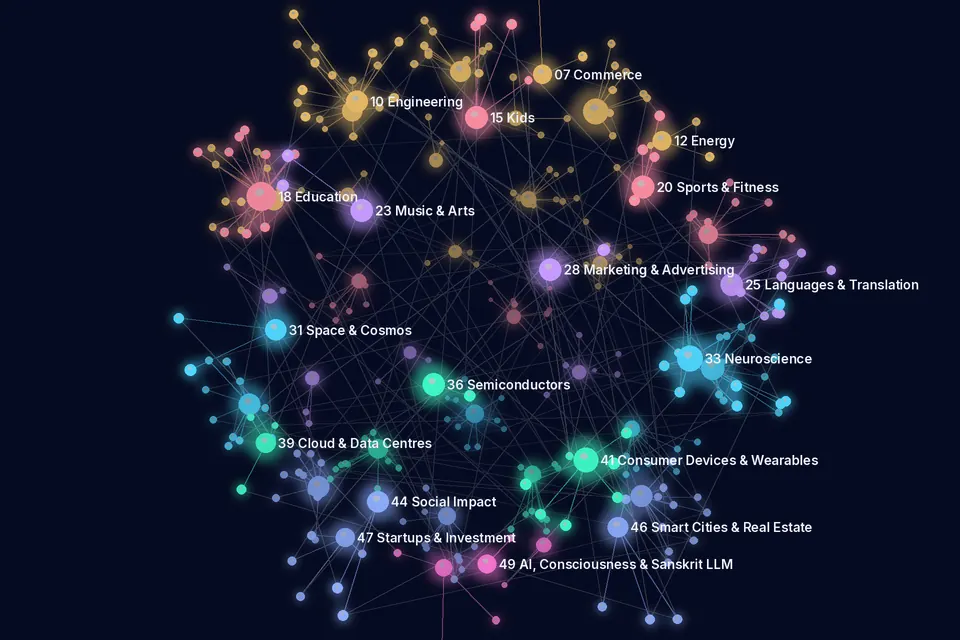

Journal of the AI Universe ✦ Research Papers Today
Research Papers Today
22 November 2026 · 552 new AI research papers in 47 of the 50 categories · Curated by Dr.P.R.K.Varma
490 peer-reviewed papers and 62 preprints, compiled automatically from arXiv, medRxiv, bioRxiv, PubMed, Crossref, OpenAlex, preprint servers via Crossref (Research Square, Preprints.org, SSRN and others), arxiv_rss, europepmc, s2. Each line gives the title (linked), authors, venue, date, evidence label and identifier. Abstracts and figures are not reproduced: open the paper to read it. A listing is not an endorsement, and preprints have not been peer-reviewed. Health papers are not medical advice.
Research map in 3D
22 November 2026: the top 274 papers in 47 categories as a 3D network. Large points are categories, small points are papers (brighter = peer-reviewed), and faint lines join papers in different categories that share a topic word in their titles. Drag to rotate, pinch or use + and − to zoom, and tap a paper to open the original. Titles and links only.

Papers per category (47 categories)
01–14 Industries & Sectors 183 papers
01 AI Filmmaking
3 papers · 3 peer-reviewedProject page →- Streaming Video Moment Retrieval via Temporal Forecast Diffusion ModelYanhua Yang, Jiahua Li, Zhe Xu et al.ACM Transactions on Multimedia Computing Communications and Applications · · Peer-reviewed · DOI 10.1145/3849706 · Open access
- A hybrid CNN–LSTM model for alleviating cold start in the movie recommendation systemManisha Jangid, Rakesh KumarNew Review of Hypermedia and Multimedia · · Peer-reviewed · DOI 10.1080/13614568.2026.2765535
- Generative AI driven animation creation and audience engagement Modeling for interactive digital entertainmentZhang XEntertainment Computing · · Peer-reviewed · DOI 10.1016/j.entcom.2026.101265
02 AI Agriculture
15 papers · 15 peer-reviewedProject page →- A predictive intelligence and AI-driven irrigation optimization framework for enhancing crop yield in precision agricultureAli Osman AS, Alzahrani IR, Mohamed Mahmoud AM et al.Journal of environmental science and health. Part A, Toxic/hazardous substances & environmental engineering · · Peer-reviewed · DOI 10.1080/10934529.2026.2751694 · PMID 43065195
- Multimodal Artificial Intelligence for Precision Agriculture: A Comprehensive Review of Cross-Modal Data Fusion, Foundation Models and Intelligent Decision SupportMoussaid A, Briak HSmart Agricultural Technology · · Peer-reviewed · DOI 10.1016/j.atech.2026.102763 · Open access
- Dual-band passive RFID sensor based on CNN-attention high-precision regression prediction for NH3/CO2 concentration monitoring in livestock farmsZhang P, Song G, Miao F et al.Talanta · · Peer-reviewed · DOI 10.1016/j.talanta.2026.130935 · PMID 43063708
- Impact of Preprocessing and Segmentation Techniques on Machine Learning and Deep Learning Models for Rice Crop Disease Classification: a Systematic Evaluation with Statistical ValidationVijayan S, Chiranji Lal ChowdharyJournal of Plant Diseases and Protection · · Peer-reviewed · DOI 10.1007/s10343-026-01472-1
- Integrating UAV LiDAR-Derived Structural and Spectral Data for Improved Aboveground Biomass Estimation in KonjacChen Yong, Kunrong Hu, 何伟昌 et al.Smart Agricultural Technology · · Peer-reviewed · DOI 10.1016/j.atech.2026.102751 · Open access
- Automated detection and quantification of southern corn leaf blight severity in popcorn maize using computer visionHércules dos Santos Pereira, Marcelo Vivas, Yure Pequeno de Souza et al.Euphytica · · Peer-reviewed · DOI 10.1007/s10681-026-03831-5 · Open access
- Chronologically validated and explainable machine learning for daily biogas prediction at an industrial poultry-litter anaerobic digestion facilityR. Choudhary, Ajay Kumar, Shuchi Tiwari et al.Environment Systems and Decisions · · Peer-reviewed · DOI 10.1007/s10669-026-10174-y
- Integrating multimodal large language models and UAV multispectral imagery for field-scale mapping of tobacco soil suitabilityYu X, Yu J, Chen X et al.Smart Agricultural Technology · · Peer-reviewed · DOI 10.1016/j.atech.2026.102765 · Open access
- Artificial Intelligence (AI)-Driven Precision Liming in Optimized Soil pH to Ensure Global Food Security and Sustainable Agriculture: A Systematic ReviewAbate SG, Liu FTheScientificWorldJournal · · Peer-reviewed · DOI 10.1155/tswj/2566808 · PMID 43065311
- A Hybrid 1D CNN-LSTM Model for Anomaly Detection in Agricultural IoT SystemsMustapha Abubakar Ibrahim, Nurudeen Ibrahim, Ridwan Kolapo et al.International Journal of Innovative Science and Research Technology (IJISRT) · · Peer-reviewed · DOI 10.38124/ijisrt/26nov646 · Open access
03 AI Defence
2 papers · 1 peer-reviewed · 1 preprintProject page →- Retaining Dignity in Autonomous and AI-Mediated WarfareNathan Wood, Juan Ignacio del VallePhilosophy of AI · · Peer-reviewed · DOI 10.18716/ojs/phai/2026.3309 · Open access
- Quantum-Inspired Trust-Aware Decision Intelligence for Resilient UAV Systems in Modern WarfareNadella SSSRN · · Preprint · DOI 10.2139/ssrn.7711099 · Open access
04 AI Healthcare
93 papers · 85 peer-reviewed · 8 preprintsProject page →Research listing only, not medical advice.
- ECG foundation models for cardiovascular screening in a cohort of young competitive athletesGoelz C, Lang S, Schlichtiger J et al.npj Digital Medicine · · Peer-reviewed · DOI 10.1038/s41746-026-03474-9 · Open access
- Patient-Staff Interaction in ED by Real-time Location System: Novel Predictors of In-hospital Mortality Enhancing APACHE III/APS in ICU PatientsHao X, Dong Y, Jones D et al.Mayo Clinic proceedings · · Peer-reviewed · DOI 10.1016/j.mayocp.2026.10.025 · PMID 43064300
- A machine learning model for predicting in-hospital mortality among ICU patients with cirrhosis and sepsisHui Chen, Chen Yang, Jiahao Zhang et al.BMC Gastroenterology · · Peer-reviewed · DOI 10.1186/s12876-026-05499-6 · Open access
- Enhanced prognosis stratification following surgery for pancreatic ductal adenocarcinoma to optimize clinical decisions by reflecting tumor heterogeneity and microenvironmentWu J, Fu X, Wu H et al.Insights into imaging · · Peer-reviewed · DOI 10.1186/s13244-026-02451-w · PMID 43064878
- Deep learning-based CT segmentation of mandibular bone invasion in oral squamous cell carcinomaSteybe D, Fiederling E, Poxleitner P et al.BMC oral health · · Peer-reviewed · DOI 10.1186/s12903-026-10471-7 · PMID 43065017 · Open access
- An artificial intelligence–driven predictive model for EPclin risk assessment (ENDOPREDICT test) in HER2-negative luminal breast cancerNicolas Lembege, Van-Linh Le, Léonie Alran et al.Scientific Reports · · Peer-reviewed · DOI 10.1038/s41598-026-80438-9 · Open access
- Artificial Intelligence in Thoracic Pathology and Biomarker Assessment: An IASLC Pathology Committee ReviewLe Quesne J, Yuan K, Akram F et al.Journal of thoracic oncology : official publication of the International Association for the Study of Lung Cancer · · Peer-reviewed · DOI 10.1016/j.jtho.2026.106259 · PMID 43064238
- Machine learning-supported polytrauma triage decision support: A concept analysis for emergency nursingSetiyono E, Kosasih CE, Trisyani YInternational emergency nursing · · Peer-reviewed · DOI 10.1016/j.ienj.2026.101933 · PMID 43063551
- Practical application of 0.55T dental-dedicated MRI in dentistry and maxillofacial surgeryWeber M, Trumet L, Lutz A et al.Oral surgery, oral medicine, oral pathology and oral radiology · · Peer-reviewed · DOI 10.1016/j.oooo.2026.10.012 · PMID 43064623
- Artificial Intelligence in Screening and Early Detection of Prostate CancerCacciamani GE, Pannu AS, Thimansson E et al.European urology focus · · Peer-reviewed · DOI 10.1016/j.euf.2026.11.003 · PMID 43064602
05 AI Finance
16 papers · 9 peer-reviewed · 7 preprintsProject page →Research listing only, not financial advice.
- A modular deep learning framework with exact Shapley attribution for explainable stock market forecasting and risk-aware decision supportVaishali Gupta, Garima Rathi, Ravi Sharma et al.Scientific Reports · · Peer-reviewed · DOI 10.1038/s41598-026-80656-1 · Open access
- A systematic review of artificial intelligence methods and data constraints in ESG financial intelligence with implications for emerging marketsMiehleketo Mathebula, Abiodun Modupe, Vukosi Marivate et al.Discover Artificial Intelligence · · Peer-reviewed · DOI 10.1007/s44163-026-02647-5
- Bayesian network fusion of pre-trained language models for financial sentiment analysisRasoul Amirzadeh, Dhananjay Thiruvady, Fatemeh ShiriJournal Of Big Data · · Peer-reviewed · DOI 10.1186/s40537-026-01601-7 · Open access
- AI-Driven Financial Fraud Auditing and Evidence Chain Construction in Smart ManufacturingZhaojun HouICST Transactions on Scalable Information Systems · · Peer-reviewed · DOI 10.4108/eetsis.14854 · Open access
- The Impact of Using Artificial Intelligence in the Financial and Banking SectorSoumia Ababsa, Zoubeir Ayache, Khaled RedjemCanadian Journal of Marketing Research · · Peer-reviewed · DOI 10.61336/cjmr.1604.44 · Open access
- Privacy-Aware Multi-Lender Routing for Point-of-Sale Finance using Reinforcement Learning: A Simulation StudyAmit GamotInternational Journal of Advanced Artificial Intelligence Research · · Peer-reviewed · DOI 10.55640/ijaair-v03i11-07 · Open access
- Explainable Artificial Intelligence and Consumer Financial Decisions: The Role of Trust, Transparency, and Financial Literacy.Yanti Amanda Putri, Khaled Khalaf Tawfik GhanemARTHASASTRA Journal of Economics and Business · · Peer-reviewed · DOI 10.63199/arthasastra.v2i1.114 · Open access
- Online Payment Fraud Detection Using Machine LearningAkshay Ajalsonde Om Auti Vedant Ghadge, M. N. Pimple K. D. Jamkar Dr. H. B. Jadhav Ajay KapseInternational Journal of Advanced Research in Science Communication and Technology · · Peer-reviewed · DOI 10.48175/ijarsct-40887 · Open access
- Corrigendum: Organizational change factors and their impact on artificial intelligence adoption in management accountingJournal of Accounting & Organizational Change · · Peer-reviewed · DOI 10.1108/jaoc-09-2026-0630
- Predicting Financial Contagion across Emerging Economies Using Machine Learning and Network AnalysisDubey A, Purkayastha RSSRN · · Preprint · DOI 10.2139/ssrn.7715481 · Open access
06 AI Law & Investigation
13 papers · 9 peer-reviewed · 4 preprintsProject page →Research listing only, not legal advice.
- The boundaries of copyright law in regulating AI-generated content: lessons from the UKYing YeJournal of Intellectual Property Law & Practice · · Peer-reviewed · DOI 10.1093/jiplp/jpag097
- Model choice and prompt framing in LLM sustainability judgmentsTamas Olah, Marianna Abuczki, Nayna Babar et al.Discover Sustainability · · Peer-reviewed · DOI 10.1007/s43621-026-05369-x · Open access
- A metaphor-aware framework for sleeping patent status prediction using large language models and hierarchical feature tokenizer transformerJianxin Zhu, Yutong Chuang, 志南 汪 et al.Scientometrics · · Peer-reviewed · DOI 10.1007/s11192-026-05900-x
- Artificial Intelligence in Criminal Adjudication: Judicial Decision-Making, Algorithmic Bias, and the Right to a Fair TrialShreya PandeyInternational Journal of Law Management & Humanities · · Peer-reviewed · DOI 10.63108/ijlmh.13201 · Open access
- From Data Protection to Algorithmic Accountability: Rethinking Legal Remedies for AI-Assisted Decisions in GhanaGodwin GadugaInternational Journal of innovative inventions in Social Science and Humanities · · Peer-reviewed · DOI 10.58806/ijiissh.2026.v3i11n06
- Deceptive Design Forensics — AI-Powered Detection of Privacy Interface Manipulation in Mobile AppsMuhammad JunaidJournal of Engineering Science and Technological Trends · · Peer-reviewed · DOI 10.64060/jestt3i34
- AN EVIDENCE ADMISSIBILITY CONTRACT FOR UI TEST FAILURE DIAGNOSIS USING LARGE LANGUAGE MODELSOleksii S. ShastaloCollection of scientific papers «ΛΌГOΣ» with Proceedings of the IX International Scientific and Practical Conference «Theoretical and practical aspects of modern scientific research» (Seoul, South Korea; 20 November 2026) · · Peer-reviewed · DOI 10.36074/logos-20.11.2026.029
- Development and Internal Evaluation of a Machine Learning Model for Violence Risk Classification Among the CETM Population Using SOQUIJ JudgmentsSabrina Grenier, Alexandre HudonForensic Sciences · · Peer-reviewed · DOI 10.3390/forensicsci6040105 · Open access
- PatMamba: Grid-Aware Vision Mamba for Compound Patent Figure SegmentationZheng Ma, Feng ZhangApplied Sciences · · Peer-reviewed · DOI 10.3390/app162211522 · Open access
- Reconstructing the Evidentiary Architecture: A Comparative Analysis of Digital Forensics, Artificial Intelligence, and Judicial Admissibility under Article 164 of Pakistan's Qanun-e-Shahadat Order 1984Zaman SSSRN · · Preprint · DOI 10.2139/ssrn.7713278
07 AI Commerce
2 papers · 2 peer-reviewedProject page →- A systematic evaluation of Large Language Models for ontology generation from structured e-commerce dataAndrea Riquelme-García, Juan Mulero-Hernández, Ronghao Pan et al.Information Processing & Management · · Peer-reviewed · DOI 10.1016/j.ipm.2026.105316 · Open access
- When Retrieval Does Not Help: Benchmarking Large Language Models on Regret and Disappointment in Customer ReviewsSarthak Pattnaik, Chhayank Jain, Eugene PinskyAnalytics · · Peer-reviewed · DOI 10.3390/analytics5040055 · Open access
08 AI Journalism
2 papers · 2 peer-reviewedProject page →- Did AI Contribute to This? Exploring the Impact of Textual AI Labels on Message CredibilityStephanie D’haeseleer, Tom Evens, Kristin Van DammeJournalism Studies · · Peer-reviewed · DOI 10.1080/1461670x.2026.2765699
- Balancing Societal Impact and Digital Footprint: A Sustainability-Aware Framework for AI-Based Misinformation DetectionSofowora Mayowa Abiola, Niken Parnia Norda, Mojeed Taiwo Akolade et al.Journal of Sustainable Software Engineering and Information Systems · · Peer-reviewed · DOI 10.58723/jsseis.v2i2.261 · Open access
09 AI Architecture
1 paper · 1 peer-reviewedProject page →- Integrating Institutional Construction Safety Regulations into Deep Reinforcement Learning for Autonomous Equipment Obstacle AvoidanceHyobeen Kim, Sung-Keun KimBuildings · · Peer-reviewed · DOI 10.3390/buildings16224633 · Open access
10 AI Engineering
8 papers · 8 peer-reviewedProject page →- Machine learning enabled design optimization of a triple-band metamaterial absorber for THz applicationsP. GargJournal of Computational Electronics · · Peer-reviewed · DOI 10.1007/s10825-026-02664-8
- Machine learning-based reconstruction of finite element thermal fields induced by microwave heating: a comparative studyA. Milyani, N. Abu-HamdehScientific Reports · · Peer-reviewed · DOI 10.1038/s41598-026-81107-7
- Deep learning-assisted phase segmentation and quantitative microstructure analysis of Al–Mg–Zn–Sc–Zr alloyZhicheng Huang, Bo Li, MD Kabir et al.Journal of Materials Science · · Peer-reviewed · DOI 10.1007/s10853-026-14159-9
- A decoupled multi-stage physics-informed neural network for thermofluid field reconstruction in a free-piston Stirling engineBo Fu, 耿冬寒, Xiangming Zeng et al.International Communications in Heat and Mass Transfer · · Peer-reviewed · DOI 10.1016/j.icheatmasstransfer.2026.113145
- Quasi-3D axisymmetric bending analysis of functionally graded circular plates using a deep energy method-based physics-informed neural networkYue Shen, Xiong-Zhu Bu, Bing Han et al.Archive of applied mechanics (1991) · · Peer-reviewed · DOI 10.1007/s00419-026-03225-y
- Physics-informed hierarchical graph neural network with multi-scale feature extraction for bearing fault diagnosisYuhuang Jia, Xin-Hui Shao, Jianghua Liu et al.Measurement Science and Technology · · Peer-reviewed · DOI 10.1088/1361-6501/aeb8ab
- A novel information-controlled graph convolutional framework for multisensor fault diagnosisLizhi Cao, Dongying Han, Peiming Shi et al.Structural Health Monitoring · · Peer-reviewed · DOI 10.1177/14759217261497050
- An Experimental Platform for Reinforcement Learning in Building Control SystemsJohannes Hammerer, Sascha Hammes, Mohammad Esmaeili et al.E3S Web of Conferences · · Peer-reviewed · DOI 10.1051/e3sconf/202675707002 · Open access
11 AI Robotics
3 papers · 3 peer-reviewedProject page →- Precision positioning algorithm integrating reinforcement learning and sliding mode control for robotic arms: an assurance-oriented hybrid frameworkBobo LiInternational Journal of Systems Assurance Engineering and Management · · Peer-reviewed · DOI 10.1007/s13198-026-03494-4
- A review of unmanned aerial vehicle design and artificial intelligence methods for autonomous flightSharamjeet Shaurya, Prasant Singh, Aditya Aggarwal et al.Discover Applied Sciences · · Peer-reviewed · DOI 10.1007/s42452-026-09885-3 · Open access
- Off-the-Shelf Deep Learning Models for Visual Perception in Robotic ICSI: A Single-Center Feasibility Study of Detection and SegmentationMario Reyes-Llamas, Alejandro Chávez-Badiola, Vladimir Ocegueda-Hernández et al.Bioengineering · · Peer-reviewed · DOI 10.3390/bioengineering13111397 · Open access
12 AI Energy
3 papers · 2 peer-reviewed · 1 preprintProject page →- A 2012–2024 energy-carbon input-output dataset with new power-system detail and integrated energy-flow accounts for ChinaXia Y, Sun Y, Yang Z et al.Scientific Data · · Peer-reviewed · DOI 10.1038/s41597-026-08803-x · Open access
- A Comprehensive Review on Artificial Intelligence for Image-Based Photovoltaic Fault Detection in Desert ClimatesTahir MH, Bicer YEnergy and AI · · Peer-reviewed · DOI 10.1016/j.egyai.2026.100973 · Open access
- Predictive Urban Scale Digital Twins For Optimising Solar Panel Energy YieldJolaolu O, Oladiran A, Osibamowo DSSRN · · Preprint · DOI 10.2139/ssrn.7713078 · Open access
13 AI Transportation
15 papers · 12 peer-reviewed · 3 preprintsProject page →- Traffic signs recognition for advanced driver assistance systems using deep learningMona Hesham, M. Abd Rabou, Mahmoud A. Shawky et al.Scientific Reports · · Peer-reviewed · DOI 10.1038/s41598-026-75204-w
- PRISM: Reinforced Semantic Communication for Decentralized Federated Anomaly Detection in Vehicular NetworksGeorge A. Levis, Antonio Di MaioACM International Symposium on Theory, Algorithmic Foundations, and Protocol Design for Mobile Networks and Mobile Computing (MobiHoc) · · Peer-reviewed · DOI 10.1145/3842721.3849685 · Open access
- Imbalance aware modelling of road crash severity for transport safety policyMuhammad Fadhirul Anuar Mohd Azami, Md Yushalify Misro, Rizati HamidunScientific Reports · · Peer-reviewed · DOI 10.1038/s41598-026-80019-w · Open access
- Ensemble-CNN-Attention-Voting (ECAV) network with physics-guided data augmentation for impact localization and energy identification in composite railway structuresJia-Hao Lu, Yu-Hang Lu, Yao Hu et al.Journal of Civil Structural Health Monitoring · · Peer-reviewed · DOI 10.1007/s13349-026-01172-4
- Deep learning-enhanced traffic emission modeling across diverse geographic locationsNehal Fawzy, M. A. Mohamed, H. Amer et al.Modeling Earth Systems and Environment · · Peer-reviewed · DOI 10.1007/s40808-026-02927-0
- Optimizing Client Selection in Vehicular Edge Computing-Based Federated Learning with Deep Reinforcement LearningJia-Gao Wu, Zhou-Li Fan, Fan-Yu Yan et al.Journal of Network and Systems Management · · Peer-reviewed · DOI 10.1007/s10922-026-10109-7
- FCD-Drive: Fully Convolutional Diffusion Model for End-to-End Autonomous DrivingWeiye Hao, Yonghua Cai, Jialong Liu et al.SAE technical papers on CD-ROM/SAE technical paper series · · Peer-reviewed · DOI 10.4271/2026-99-2426
- A Hierarchical Reinforcement Learning Framework with Target-State Guidance for Highway On-Ramp MergingKang Li, Chaofan Lei, Yuhao Ding et al.SAE technical papers on CD-ROM/SAE technical paper series · · Peer-reviewed · DOI 10.4271/2026-99-2446
- Recent advances in multi-agent human trajectory prediction: A comprehensive reviewFinet C, Da Silva Martins S, Hayet JB et al.The International Journal of Robotics Research · · Peer-reviewed · DOI 10.1177/02783649261505482
- Smart Street Light Energy Optimization System Using Artificial Intelligence and Computer VisionPriyanshu Kumar, Nikhil ., Kartik DograInternational Journal of Innovative Science and Research Technology (IJISRT) · · Peer-reviewed · DOI 10.38124/ijisrt/26nov631 · Open access
14 AI Manufacturing
7 papers · 6 peer-reviewed · 1 preprintProject page →- Deep learning enables 3D manufacturing inspection from a single imageHossein Kabir, Miles V. Bimrose, Charles Whealton et al.npj Advanced Manufacturing · · Peer-reviewed · DOI 10.1038/s44334-026-00123-7 · Open access
- A Human-Centric Decision Framework for Selecting Artificial Intelligence Collaboration Strategies Under Uncertainty in Industry 5.0Muhammad Zafar Abbas, R. Anjum, M. Farooq et al.Cognitive Computation · · Peer-reviewed · DOI 10.1007/s12559-026-10671-x
- An inverse reinforcement learning-guided evolutionary algorithm for cooperative multi-AGV scheduling in manufacturing workshopsTeng Wang, Zhuo Li, Jian Sun et al.Expert Systems with Applications · · Peer-reviewed · DOI 10.1016/j.eswa.2026.135161
- FEdgeNAV: Edge-Based Federated Learning Framework for Wheel Odometry Fault Detection in Industrial AGV Fleet NavigationAlexandre Niyomugaba, Dariusz MrozekACM International Symposium on Theory, Algorithmic Foundations, and Protocol Design for Mobile Networks and Mobile Computing (MobiHoc) · · Peer-reviewed · DOI 10.1145/3842721.3850109 · Open access
- A Lightweight Reparameterized Multi-Scale Feature Fusion Architecture for Insulator Defect Detectionyuancan xia, Weigen Chen, Youyuan Wang et al.Measurement Science and Technology · · Peer-reviewed · DOI 10.1088/1361-6501/aec4fe
- Adaptive and Explainable Decision Support for Resilient Industrial Rail Operations: A Human-Centric DMAIC–Machine Learning FrameworkAyoub Raziq, Mohamed El Khaïli, Abdellah ZammaApplied System Innovation · · Peer-reviewed · DOI 10.3390/asi9110246 · Open access
- From Pilot to Production: A Decision-Centred Framework for Governed AI in Manufacturing OperationsSalami Araghi FSSRN · · Preprint · DOI 10.2139/ssrn.7715961
15–20 People & Life Stages 83 papers
15 AI Kids
4 papers · 3 peer-reviewed · 1 preprintProject page →- Large language model diagnostic performance across informant sources in child and adolescent psychiatry: a prospective multicenter studyHakan Kayış, Akın Tahıllıoğlu, Ayşegül Tuğba Hıra Selen et al.Scientific Reports · · Peer-reviewed · DOI 10.1038/s41598-026-81830-1 · Open access
- The use of artificial intelligence services in generation of illustrations for children’s literatureDaria Yerokhina, Нонна КулішоваInnovations in Publishing Printing and Multimedia Technologies · · Peer-reviewed · DOI 10.59476/ilpmt2026.v2i2.803 · Open access
- Artificial intelligence for predicting postoperative outcomes and complications in pediatric urology: a scoping reviewRawan AlSaad, Muthana Ghazi Al-Salihi, Santiago Vallasciani et al.Frontiers in Urology · · Peer-reviewed · DOI 10.3389/fruro.2026.2020104 · Open access
- SafeConnect AI: A Formative Evaluation of Child Online Safety, Parental Views and Privacy Across 45 Family DyadsRiaz ZSocArXiv · · Preprint · DOI 10.31235/osf.io/bzwsg · Open access
16 AI Geriatric
7 papers · 7 peer-reviewedProject page →- Less Federation, More Personalization: One-Shot Multi-View Clustering for Federated Fall DetectionDonato Cerciello, Leonardo Schiavo, Ángel Panizo-LLedot et al.ACM International Symposium on Theory, Algorithmic Foundations, and Protocol Design for Mobile Networks and Mobile Computing (MobiHoc) · · Peer-reviewed · DOI 10.1145/3842721.3850110 · Open access
- Machine learning-based mortality prediction models among older adults in routine primary care: comparing overall performance with a subgroup of people with dementiaExmann CJC, van Hout HPJ, Verheij R et al.Family medicine and community health · · Peer-reviewed · DOI 10.1136/fmch-2026-004112 · PMID 43064508
- Effects of an artificial intelligence-supported family communication system on burnout and quality of life among long-term care nurses: A quasi-experimental studyLin YY, Shieh WY, Tsai HH et al.International journal of nursing studies · · Peer-reviewed · DOI 10.1016/j.ijnurstu.2026.105752 · PMID 43063885
- Automation vs. Authenticity: Values and Concerns of Integrating AI-Powered Tools into Life Storytelling for Older AdultsWei Zhao, Lucy A. Sparrow, Melissa J. Rogerson et al.Australian Conference on Human-Computer Interaction (OzCHI) · · Peer-reviewed · DOI 10.1145/3847401.3847430 · Open access
- Leveraging Machine Learning for Predicting Clinical Status of Alzheimer’s Disease at Subsequent Visits Using Longitudinal Multimodal DataArshdeep Kaur, Meenakshi Mittal, Jasvinder Singh Bhatti et al.Annals of Data Science · · Peer-reviewed · DOI 10.1007/s40745-026-00736-x
- Systematic review of artificial intelligence for ocular imaging-based ageing measures: evidence, challenges, and clinical potentialPushpanathan K, Yang GD, Kim MK et al.Asia-Pacific journal of ophthalmology (Philadelphia, Pa.) · · Peer-reviewed · DOI 10.1016/j.apjo.2026.100391 · PMID 43064073
- MRI Alzheimer Disease recognition Using 2D DWT and Multi-Dimensional CNNAbdulfatah Kalaje, Hasan DemirIJACI International Journal of Advanced Computing and Informatics · · Peer-reviewed · DOI 10.71129/ijaci.v3i1.pp1-14 · Open access
17 AI Psychology
11 papers · 11 peer-reviewedProject page →Research listing only, not medical advice.
- Users of AI for emotional support more likely to need professional careAlison KnopfMental Health Weekly · · Peer-reviewed · DOI 10.1002/mhw.35083
- Evaluating the performance of deep learning models in diagnosing autism spectrum disorder using electroencephalography: a systematic review and meta-analysisShayan Yousefi, Muhammad Islampanah, Reza Elahi et al.BMC Psychiatry · · Peer-reviewed · DOI 10.1186/s12888-026-08886-1 · Open access
- Longitudinal Associations of Trust in Humans and AI With Loneliness and Life Satisfaction: Variable- and Person-Centered AnalysesYan Dong, Yan-Ling Chen, Min-Xiang Zhao et al.Applied Research in Quality of Life · · Peer-reviewed · DOI 10.1007/s11482-026-10711-6
- Investigating the Effects of Identity Disclosure in Personality-Driven ChatbotsMuhammad Hassan Khan, Martina De, Salik saleem et al.Australian Conference on Human-Computer Interaction (OzCHI) · · Peer-reviewed · DOI 10.1145/3847401.3847435 · Open access
- When the Tool Reshapes the Practitioner: A Futures-Oriented Analysis of Risks Associated with AI Applications in PsychotherapyMáté Szondy, Péter Fazekas, Máté Kapitány‐FövényEuropean Journal of Futures Research · · Peer-reviewed · DOI 10.1186/s40309-026-00308-5 · Open access
- Relating to AI: A relationship-orientation view of its impact on humansZhang RZ, Kyung EJ, Longoni CCurrent opinion in psychology · · Peer-reviewed · DOI 10.1016/j.copsyc.2026.102498 · PMID 43063592
- Emotion-associated representations in the feed forward gates of a language modelRayan Upadhyay, Sankar BalasubramanianJournal of High School Science · · Peer-reviewed · DOI 10.64336/001c.175619 · Open access
- Artificial Intelligence vs. Emotional Intelligence: A Clash Between Technology and HumanityMashxura Dilmurod qizi QodirjonovaScience and Innovation: Republican Scientific and Practical Conference · · Peer-reviewed · DOI 10.70413/si-v04-i87-a11252 · Open access
- An Interpretable Machine Learning Approach for Predicting Depressive and Anxiety Symptoms After Treatment in Patients with Drug-Resistant EpilepsyZhengyanran Xu, Xinyuan Zhao, Helin Wang et al.Brain Sciences · · Peer-reviewed · DOI 10.3390/brainsci16111276 · Open access
- FAITHAI: Explainable Deep Learning with Synthetic Data for Pediatric Facial Phenotype and Autism-Related Image ClassificationSyed Taimoor Hussain Shah, Syed Adil Hussain Shah, Syed Baqir Hussain Shah et al.Journal of Imaging · · Peer-reviewed · DOI 10.3390/jimaging12110589 · Open access
18 AI Education
49 papers · 48 peer-reviewed · 1 preprintProject page →- Utilizing a GPT-based exam assistant to support practice and assessment in higher education: an exploratory study on learner engagement and perceptionsKatharina Frosch, Friederike Lindauer, Carmen WinkelEducational Technology Research and Development · · Peer-reviewed · DOI 10.1007/s11423-026-10749-1 · Open access
- When AI Asks Rather Than Answers: Student Experiences of Dialogic Scaffolding for Discourse Synthesis in Higher EducationForooq Zarrabi, Katarzyna Musiał, David MilneAustralian Conference on Human-Computer Interaction (OzCHI) · · Peer-reviewed · DOI 10.1145/3847401.3847431 · Open access
- Dynamic graph neural network model of student–teacher interaction in physical education teaching sceneYu ZhangDiscover Artificial Intelligence · · Peer-reviewed · DOI 10.1007/s44163-026-02769-w · Open access
- Artificial intelligence tools as adaptive feedback systems in higher education a systematic review and meta analysisMaryam Al WashahiDiscover Education · · Peer-reviewed · DOI 10.1007/s44217-026-02436-3
- Fuzzy logic and deep neural network-driven intelligent evaluation model for higher education management qualityJin-Nan YinDiscover Artificial Intelligence · · Peer-reviewed · DOI 10.1007/s44163-026-02785-w
- From the Lab to the Workplace: Adapting an AI-Powered Analytics System for Debriefing in In-situ Healthcare SimulationsVanessa Echeverría, Kiyoshige Garcés, Sachini Samaraweera et al.Australian Conference on Human-Computer Interaction (OzCHI) · · Peer-reviewed · DOI 10.1145/3847401.3857167 · Open access
- Not All Students Respond Equally to GAI Guidance: How Field Dependence–Independence Moderates Critical Thinking Behaviors in Human–AI Collaborative WritingYi Zhang, Chen Xue, Yatong ZU et al.International Journal of Human-Computer Interaction · · Peer-reviewed · DOI 10.1080/10447318.2026.2757341
- A Tutorial on Physical AI from a Multimedia Perspective: Part I Isaac Sim Simulation PlatformJianquan Wang, Lin Yang, Haiwei Dong et al.ACM Transactions on Multimedia Computing Communications and Applications · · Peer-reviewed · DOI 10.1145/3847667 · Open access
- AI-Powered Conversational Agents in Language Education: a Systematic Literature Review of Primary and Secondary EducationDimitra Anastasiou, Natarajan Chidambaram, Despoina Schina et al.Technology Knowledge and Learning · · Peer-reviewed · DOI 10.1007/s10758-026-10061-0
- Multimodal large language models in remote sensing: a tutorial-oriented reviewGuoqing Zhou, Chunxiu He, Xi Chen et al.Artificial Intelligence Review · · Peer-reviewed · DOI 10.1007/s10462-026-11755-8 · Open access
19 AI Work & Employment
8 papers · 5 peer-reviewed · 3 preprintsProject page →- AI-driven job displacement in the United States: A digital-infrastructure-constrained simulationSatoh TTechnological Forecasting and Social Change · · Peer-reviewed · DOI 10.1016/j.techfore.2026.124954 · Open access
- Does Artificial Intelligence Intensify Labor Market Polarization? The Moderating Role of Innovation Across Educational Levels in OECD CountriesM. Sahnoun, Siwar Chhida, C. AbdennadherJournal of the Knowledge Economy · · Peer-reviewed · DOI 10.1007/s13132-026-03577-4
- SmartCareer an AI-powered integrated career development and recruitment intelligence platformChetana Rane, Pranjali Tade, Vijayan Naidu et al.Discover Artificial Intelligence · · Peer-reviewed · DOI 10.1007/s44163-026-02489-1
- Artificial Intelligence Adoption and Firm Competitiveness: Quantifying the Productivity Divide among Indian SMEsS.M. Sale, Veena R HumbeInternational Journal of Global Business and Competitiveness · · Peer-reviewed · DOI 10.1007/s42943-026-00169-6
- Artificial intelligence and HR work transformation: a systematic review and theoretical framework of intra-occupational polarisationFernando Arístegui Monge, Mónica Villanueva-Villar, Elena Rivo-LópezThe International Journal of Organizational Analysis · · Peer-reviewed · DOI 10.1108/ijoa-07-2026-7507
- Evaluating Labour Market Programs Using Causal Machine Learning: A Practitioner-Oriented Framework for Estimating and Interpreting Heterogeneous Treatment EffectsSayeed J, Handouyahia A, Aouli ESSRN · · Preprint · DOI 10.2139/ssrn.7714598 · Open access
- Generative AI and Student Freelancing: Skills, Income Opportunities, and Barriers in SomaliaHilowle I, Ali Ahmed AF1000Res · · Preprint · DOI 10.12688/f1000research.193308.1
- Giving Feedback with AI: The Roles of Voice Input and AI Assistance in Shaping Engagement and EffectivenessRivera MSSRN · · Preprint · DOI 10.2139/ssrn.7716299
20 AI Sports & Fitness
4 papers · 4 peer-reviewedProject page →- Action recognition method based on deep learning and feature fusion and its application in sportsXiaoqian Peng, Xujaing Mao, Xiaomin Fang et al.Discover Artificial Intelligence · · Peer-reviewed · DOI 10.1007/s44163-026-02436-0 · Open access
- Intelligent Assessment of Athlete Skills and Motion Representation via Multimodal Transformer FrameworkJiwang SunIETE Journal of Research · · Peer-reviewed · DOI 10.1080/03772063.2026.2719006
- Correction: MotorNet, a Python toolbox for controlling differentiable biomechanical effectors with artificial neural networksOlivier Codol, Jonathan A. Michaels, Mehrdad Kashefi et al.eLife · · Peer-reviewed · DOI 10.7554/elife.113786
- Developing a Model of the Role of Artificial Intelligence in Sports Media with an Emphasis on OpportunitiesMojtaba Rahmani, Nima Majedi, Mehrali Hemmatinejad et al.AI and Tech in Behavioral and Social Sciences · · Peer-reviewed · OpenAlex W7237307712 · Open access
21–29 Culture & Belief 27 papers
21 AI Spirituality
2 papers · 2 peer-reviewedProject page →- An integrated multimodal artificial intelligence framework for halal food compliance and pilgrim sustainability in Islamic mass tourismRitam Rajak, Birendra Kishore Roy, Indrajit Ghosal et al.Discover Sustainability · · Peer-reviewed · DOI 10.1007/s43621-026-04632-5 · Open access
- Integrating artificial intelligence in religious moderation education: a comparative analysis in Indonesia and MalaysiaYedi Purwanto, T. Y. Ramadin, Mohammad Rindu Fajar Islamy et al.Qualitative Research Journal · · Peer-reviewed · DOI 10.1108/qrj-12-2025-0478
23 AI Music & Arts
2 papers · 2 peer-reviewedProject page →- MF-CAG: style-aware fusion of foundation-model features for artwork analysis and retrieval-guided image generationQing Wang, bai zhiqing, Yaqi Huang et al.Journal Of Big Data · · Peer-reviewed · DOI 10.1186/s40537-026-01619-x · Open access
- USING ARTIFICIAL INTELLIGENCE AS A SCAFFOLDING TOOL TO PROTECT HUMAN CREATIVITYDinesh Kumar & Dr. Mrityunjay YadavScholarly Research Journal for Interdisciplinary Studies · · Peer-reviewed · DOI 10.5281/zenodo.24390794 · Open access
24 AI Literature
2 papers · 2 peer-reviewedProject page →- Tool, Collaborator, or Agent? How Authority and Authorship Contextualize Generative AI UseAdam Eric BerkowitzProceedings of the ALISE Annual Conference · · Peer-reviewed · DOI 10.21900/j.alise.2026.2278 · Open access
- Artificial Intelligence-Driven Continuous Biosignal Analysis in Anesthesia and Critical Care: Detection, State Assessment, and Adverse-Event Prediction: A Critical Narrative ReviewNesrine Ben El Hadj Hassine, Chamseddine Barki, Ismail Dergaa et al.Bioengineering · · Peer-reviewed · DOI 10.3390/bioengineering13111395 · Open access
25 AI Languages & Translation
12 papers · 12 peer-reviewedProject page →- Artificial intelligence for Chinese ancient book preservation and knowledge activation: a review and conceptual frameworkYu Man Nie, Chao Li, Chao Li et al.npj Heritage Science · · Peer-reviewed · DOI 10.1038/s40494-026-03117-y · Open access
- Intelligent two-way speech and text translation system for three South African languagesSicelo Simelane, Peter OlukanmiSouth African Journal of African Languages · · Peer-reviewed · DOI 10.1080/02572117.2026.2697305 · Open access
- KD4MT: A Survey of Knowledge Distillation for Machine TranslationOna de Gibert, Joseph Attieh, Timothee Mickus et al.Computational Linguistics · · Peer-reviewed · DOI 10.1162/coli.a.651 · Open access
- FedBISINDO: edge-based federated cross-domain sign language recognition on non-IID dataGabriel Avelino Sampedro, Yanhui Cheng, Arlene Caballero et al.Scientific Reports · · Peer-reviewed · DOI 10.1038/s41598-026-74283-z · Open access
- Automatic register identification for the open web using multilingual deep learningErik Henriksson, Amanda Myntti, Saara Hellström et al.Natural language processing. · · Peer-reviewed · DOI 10.1017/nlp.2026.10044 · Open access
- Divination by Prompt: LLM-Mediated Xuanxue on Chinese Social MediaLi C, Wang L, Chen Y et al.Computers in Human Behavior · · Peer-reviewed · DOI 10.1016/j.chb.2026.109272
- From Read-Aloud Accuracy to Spontaneous Interaction: An L1-Aware Conversational AI Framework for Thai EFL LearningPhurinat Polasa, Narabodee Rodjananant, Nattapol KritsuthikulTechnology Knowledge and Learning · · Peer-reviewed · DOI 10.1007/s10758-026-10050-3
- AI-Generated versus Official Subtitles in Documentary Translation: A Literature Review Based on Season 2 of the Potala Palace佳艺 范, Yang HanIRASS Journal of Multidisciplinary Studies · · Peer-reviewed · DOI 10.67564/irassjms.v3.i11.0195 · Open access
- Interpreting isiZulu Idioms with Large Language Models: A Comparative Study of Zero-Shot Prompting, Retrieval-Augmented Generation, and Supervised Fine-TuningNontokozo Buhle Ntandoyenkosi Manukuza, MARIVATE Vukosi, Joseph Sefara et al.Journal of the Digital Humanities Association of Southern Africa · · Peer-reviewed · DOI 10.55492/dhasa.v7i02.7708 · Open access
- Terminological accuracy and semantic equivalence in generative artificial intelligence translationsNartaeva Mukhayyo BakhtiyorovnaInternational Bulletin of Applied Sciences and Technology · · Peer-reviewed · DOI 10.5281/zenodo.24359372 · Open access
27 AI Travel & Hospitality
6 papers · 5 peer-reviewed · 1 preprintProject page →- Mapping soft skills for AI-enabled service work in tourism and hospitality: An integrative systematic reviewNi B, Li Y, Marneros S et al.International Journal of Hospitality Management · · Peer-reviewed · DOI 10.1016/j.ijhm.2026.104981
- Does generative artificial intelligence reproduce tourists' behavioral biases? Evidence from the zero-price effect on hotel choicesAnguera-Torrell O, Nicolau JLAnnals of Tourism Research · · Peer-reviewed · DOI 10.1016/j.annals.2026.104324
- A Bayesian latent class reinforcement learning framework to capture adaptive, feedback-driven travel behaviourSfeir G, Hess S, Hancock TO et al.Transportation Research Part C: Emerging Technologies · · Peer-reviewed · DOI 10.1016/j.trc.2026.106171 · Open access
- Performance Evaluation and Comparison of Convolutional and Recurrent Neural Networks Using TensorFlow for Rip Current Hazard Prediction in Indonesian Tourist BeachesJoko Sutopo, Suhirman, Nur Wening et al.Current Applied Science and Technology · · Peer-reviewed · DOI 10.55003/cast.2026.269383 · Open access
- Efficiency Without Quality? A Six Sigma DMAIC (Define, Measure, Analyze, Improve, Control) Field Study of Sub-Intent Library Curation in a Live Airline ChatbotMustafa Kaçan, Selçuk AlpApplied Sciences · · Peer-reviewed · DOI 10.3390/app162211506 · Open access
- Rehearse Before You Travel: A Conceptual Model of AI-Assisted Travel Rehearsal and the Self-Fading AI HypothesisGÜNDÜZ CSocArXiv · · Preprint · DOI 10.31235/osf.io/5ygpc · Open access
28 AI Marketing & Advertising
1 paper · 1 peer-reviewedProject page →- PERSONALIZATION OF DIGITAL ADVERTISING BASED ON DATA AND ARTIFICIAL INTELLIGENCEVitaliy Tymoshchuk, H. LypakCollection of scientific papers «ΛΌГOΣ» with Proceedings of the IX International Scientific and Practical Conference «Theoretical and practical aspects of modern scientific research» (Seoul, South Korea; 20 November 2026) · · Peer-reviewed · DOI 10.36074/logos-20.11.2026.003
29 AI Gaming & Immersive Worlds
2 papers · 2 peer-reviewedProject page →- Beyond Conversations: Spatially-Anchored Previews for Intent Disambiguation in LLM-Assisted Geometry Editing in Virtual RealityJunlong Chen, Amr Gomaa, Jens Grubert et al.Proceedings of the ACM on Human-Computer Interaction · · Peer-reviewed · DOI 10.1145/3859327 · Open access
- Deep learning-driven digital twin modeling and immersive intelligent virtual exhibition for cultural relicsTong XuDiscover Artificial Intelligence · · Peer-reviewed · DOI 10.1007/s44163-026-02124-z
30–35 Science 120 papers
30 AI Research & Innovation
40 papers · 40 peer-reviewedProject page →- Accelerating high-throughput catalyst screening by direct generation of equilibrium adsorption structuresHuo S, Cao XMNature Communications · · Peer-reviewed · DOI 10.1038/s41467-026-79243-9 · Open access
- MGFN: A multi-granularity fusion network for multivariate time series analysisXie Y, Qiang B, Zhang S et al.Neural networks : the official journal of the International Neural Network Society · · Peer-reviewed · DOI 10.1016/j.neunet.2026.109925 · PMID 43063583
- Spatio-temporal graph neural network enabled proactive optimization for delay-aware service function chain deploymentGao J, Feng L, Yu P et al.Future Generation Computer Systems · · Peer-reviewed · DOI 10.1016/j.future.2026.108937
- METRO: MAP-Enhanced Twin Rollouts for Reinforcement Learning-Based Coverage and Capacity OptimizationJindan Li, Samuel Albert, Yan Xin et al.ACM International Symposium on Theory, Algorithmic Foundations, and Protocol Design for Mobile Networks and Mobile Computing (MobiHoc) · · Peer-reviewed · DOI 10.1145/3842721.3856772 · Open access
- S hear : Goal-Oriented Anomaly Detection on Compressed Time Series via Semantic Transition GraphGuoyou Sun, Panagiotis Karras, Qi ZhangACM International Symposium on Theory, Algorithmic Foundations, and Protocol Design for Mobile Networks and Mobile Computing (MobiHoc) · · Peer-reviewed · DOI 10.1145/3842721.3849674 · Open access
- Multi-Label Sentimental Classification using Enhanced BERT Model and Convolutional Neural NetworksK. SatishKumar, M. Ramesh, MSatish Kumar et al.Cognitive Computation · · Peer-reviewed · DOI 10.1007/s12559-026-10681-9 · Open access
- A Systematic Survey on Deep Learning Architectures for Point Cloud Classification and SegmentationMinhas Kamal, Hiranya Garbha Kumar, Balakrishnan PrabhakaranACM Transactions on Multimedia Computing Communications and Applications · · Peer-reviewed · DOI 10.1145/3815180 · Open access
- Median-pi-sigma artificial neural network for time series forecastingErdinç YücesoyScientific Reports · · Peer-reviewed · DOI 10.1038/s41598-026-81833-y · Open access
- Probabilistic identification of cable forces based on Bayesian neural networks with machine vision technologyFei Zhang, Yu Xin, Ding-Tang Wang et al.Journal of Civil Structural Health Monitoring · · Peer-reviewed · DOI 10.1007/s13349-026-01128-8
- Learning to Play Like Humans: A Deep Neural Framework for Believable Agent Development in Virtual WorldsButt NA, Shahzadi K, Awais MM et al.Computer Animation and Virtual Worlds · · Peer-reviewed · DOI 10.1002/cav.70185 · Open access
31 AI Space & Cosmos
2 papers · 2 peer-reviewedProject page →- Assessing satellite-derived bathymetry across optically complex coastal lagoons using explainable machine learningA. Shalby, Ahmed Mohsen, Romysaa Elasbah et al.Scientific Reports · · Peer-reviewed · DOI 10.1038/s41598-026-75863-9
- KOMPARASI ALGORITMA ENSEMBLE DAN LINEAR PADA KLASIFIKASI OBJEK ASTRONOMI SDSS17 BERBASIS VISUAL WORKFLOWMuhammad Abdan Rafi, Hidayat Hidayat, Siti Ar-rachmi Ningrum et al.Applied Information Technology and Computer Science (AICOMS) · · Peer-reviewed · DOI 10.58466/5q5sc311 · Open access
32 AI Biotechnology
36 papers · 32 peer-reviewed · 4 preprintsProject page →- AI-driven multi-omics identifies SPP1⁺ tumor-associated macrophages as a therapeutic target and predicts lymph node metastasis in papillary thyroid cancerSun J, Huai J, Zhu W et al.NPJ precision oncology · · Peer-reviewed · DOI 10.1038/s41698-026-01774-7 · PMID 43064763
- A multimodal foundation model for molecular and morphologic data in oncologyVaidya A, Zhang A, Jaume G et al.Nature cancer · · Peer-reviewed · DOI 10.1038/s43018-026-01252-w · PMID 43064800 · Open access
- Bridging morphology and molecular data for foundation models in oncologyDeutsch E, Sun RNature cancer · · Peer-reviewed · DOI 10.1038/s43018-025-01092-0 · PMID 43064799
- Generative design of antibody Fc interactions by deep mutational learningIrvine E B, Stamkopoulos E, Bikias T et al.bioRxiv (Bioengineering) · · Preprint · DOI 10.1101/2025.10.10.681689 · Open access
- Small Molecule-Protein Target Validation Strategies From Biophysical Binding Analysis to AI-Assisted Mechanistic DiscoveryZhang Y, Chen X, Hao X et al.European journal of pharmacology · · Peer-reviewed · DOI 10.1016/j.ejphar.2026.179598 · PMID 43064277
- Computational design and prioritization of putative peptide inhibitors targeting rabies virus glycoprotein using machine learning, molecular docking, and molecular dynamicsH. Sawant, Ashish Asrondkar, V. PatilIn Silico Pharmacology · · Peer-reviewed · DOI 10.1007/s40203-026-00796-0
- Targeting protein degradation strategies in drug discovery: integrating PROTACs, ubiquitination biology, and AI-driven designS. Pandiyan, C. S. Bhol, Li Wang et al.Molecular Biomedicine · · Peer-reviewed · DOI 10.1186/s43556-026-00649-4
- Redesigning the bacterial envelope: Multi-layered genetic strategies for outer membrane vesicle productionLee JY, Yang IS, Yoo SMBiotechnology advances · · Peer-reviewed · DOI 10.1016/j.biotechadv.2026.109103 · PMID 43064264
- Integrating artificial intelligence prescreening with molecular dynamics for the design of peptide-based WWP1 inhibitors as promising therapeutic agents against breast cancer, including the triple-negative subtypeFassi EMA, Mathlouthi S, Maspero E et al.European journal of medicinal chemistry · · Peer-reviewed · DOI 10.1016/j.ejmech.2026.119557 · PMID 43063569
- Extraction of standard molecular patterns from drug candidates using explainable graph neural networksVenkatesh Bandaru, Santhosh Amilpur, C. DasariJournal of Computer-Aided Molecular Design · · Peer-reviewed · DOI 10.1007/s10822-026-00961-9
33 AI Neuroscience
14 papers · 11 peer-reviewed · 3 preprintsProject page →- Potential and pitfalls of artificial intelligence to address disparities in epilepsyOtte WM, Valente KD, van der Maas FI et al.Nature reviews. Neurology · · Peer-reviewed · DOI 10.1038/s41582-026-01287-8 · PMID 43064818
- Short intervals of inertial measurement unit data collected during activities of daily living can provide a quantitative method to assess disease severity and functional ability in Parkinson's diseaseVanchinathan V L, Farah M, Singh A et al.medRxiv (Neurology) · · Preprint · DOI 10.64898/2026.10.30.26366941 · Open access
- From Gene Sets to Brain Function: A Physiology-Informed Framework for Multi-Omics Integration in Precision NeurophysiologyÖlçüoğlu RChronic diseases and translational medicine · · Peer-reviewed · DOI 10.1002/cdt3.70078 · PMID 43065518 · Open access
- Video-Based Automated Seizure Classification Using Multimodal Large Language ModelsZhang L, Jiang R, Monsoor T et al.Annals of clinical and translational neurology · · Peer-reviewed · DOI 10.1002/acn3.70574 · PMID 43064535 · Open access
- SpineFusion for local and global feature fusion in two dimensional MRI image classificationSalih Taha Alperen Özçelik, Elif İrem Kılıç, Hasan GülerScientific Reports · · Peer-reviewed · DOI 10.1038/s41598-026-81586-8 · Open access
- Bayesian Deep Generative Models for Multiplex Networks with Multiscale Overlapping ClustersYuren Zhou, Yuqi Gu, David B. DunsonJournal of the American Statistical Association · · Peer-reviewed · DOI 10.1080/01621459.2026.2762546 · Open access
- A bibliometric and thematic review of deep learning approaches for brain MRI analysisBinod Bhattarai, Deepika Sharma, Rashmi DahiyaDiscover Artificial Intelligence · · Peer-reviewed · DOI 10.1007/s44163-026-02728-5
- Preprocessing-driven early-stage brain tumour detection using baseline CNN models on clinical MRI dataManinder Kaur, Sahil Verma, Kavita Verma et al.The Egyptian Journal of Radiology and Nuclear Medicine · · Peer-reviewed · DOI 10.1186/s43055-026-01913-x
- An annotated dataset and benchmark for stroke named entity recognition in Indonesian patient health queriesMiseri Cordiaz S, Yaseen Muhammad, Md Ariful Islam Mozumder et al.Scientific Reports · · Peer-reviewed · DOI 10.1038/s41598-026-81172-y · Open access
- Evaluation of collateral circulation in symptomatic Moyamoya disease using artificial intelligence-assisted whole-brain computed tomography perfusion-derived dynamic four-dimensional computed tomography angiographyQiao F, Zhang W, Wang L et al.Neuroreport · · Peer-reviewed · DOI 10.1097/wnr.0000000000002321 · PMID 43063949
34 AI Environment
21 papers · 19 peer-reviewed · 2 preprintsProject page →- Spatiotemporal patterns and driving mechanisms of Total nitrogen in a typical agricultural watershed based on remote sensing: A case study of the Yiluo River BasinLiu Z, Shi C, Sun C et al.Journal of contaminant hydrology · · Peer-reviewed · DOI 10.1016/j.jconhyd.2026.105167 · PMID 43063655
- Improving and evaluating local-scale wetland representation using multi-source remote sensing data and object-based machine learning in the Kuils River Catchment, South AfricaSiyamthanda Gxokwe, T. Dube, Nasiphi Ngcoliso et al.Wetlands Ecology and Management · · Peer-reviewed · DOI 10.1007/s11273-026-10215-y
- Genesis of High-Fluoride Groundwater and Associated Health Risks in the Huangqihai BasinHou Y, Ning H, Zhang Q et al.Water environment research : a research publication of the Water Environment Federation · · Peer-reviewed · DOI 10.1002/wer.70685 · PMID 43065279
- Large-Scale Mapping of Individual Standing Dead Trees Using Deep Learning and Open DataKilian Sperber, Sebastian Briechle, Michael SchmittPFG – Journal of Photogrammetry Remote Sensing and Geoinformation Science · · Peer-reviewed · DOI 10.1007/s41064-026-00428-4 · Open access
- Detecting and interpreting potential illegal construction and demolition waste landfills using remote sensing and machine learning: evidence from ScotlandYing Chen, Jian Zuo, Alessandro Manzardo et al.Resources Conservation and Recycling · · Peer-reviewed · DOI 10.1016/j.resconrec.2026.109243 · Open access
- Artificial intelligence and remote sensing for urban landscape and environmental design optimizationWang LiTheoretical and Applied Climatology · · Peer-reviewed · DOI 10.1007/s00704-026-06741-7
- Do Climate-Risk Signals Predict ESG ETF Volatility? Evidence from Regularized Panel Machine LearningGao Z, Kang W, Sheng XFinance Research Letters · · Peer-reviewed · DOI 10.1016/j.frl.2026.111122 · Open access
- Improved water process simulation by APSIM-XGBoost reveals climate resilience benefits of tillage practicesXi S, Zhang Y, Zhang Z et al.Computers and Electronics in Agriculture · · Peer-reviewed · DOI 10.1016/j.compag.2026.112721
- An attribute-based multi-branch deep learning framework for landslide susceptibility mapping with heterogeneous conditioning factorsShan-Peng Liu, Qian-Hao Yue, K. IsobeBulletin of Engineering Geology and the Environment · · Peer-reviewed · DOI 10.1007/s10064-026-05413-0
- Explainable machine learning and DNN for surrogate modeling of the entropy-weighted water quality index (EWQI) with hydrogeochemical insights in a coal-mining region, IndiaRavi Prakash Kumar, Prasoon Kumar SinghEnvironmental Geochemistry and Health · · Peer-reviewed · DOI 10.1007/s10653-026-03618-6
35 AI Quantum Computing
7 papers · 7 peer-reviewedProject page →- Classifying morphologically unidentifiable leukemia blast cells using quantum neural networks and ResNeXtAyan Kumar, A. Quadir, Sabireen H et al.Scientific Reports · · Peer-reviewed · DOI 10.1038/s41598-026-77383-y · Open access
- Quantum machine learning for the quantum lattice Boltzmann method: Trainability of variational quantum circuits for the nonlinear collision operator across multiple time stepsAntonio David Bastida Zamora, Ljubomir Budinski, Pierre Sagaut et al.Physical review. E · · Peer-reviewed · DOI 10.1103/d93h-bp5b · Open access
- Quantum-resilient graph-based cryptographic architecture with Cir-SFDB-CAN optimization for energy-efficient multi-core FPGA implementationK. Srinivasan, J. RajaAin Shams Engineering Journal · · Peer-reviewed · DOI 10.1016/j.asej.2026.104483 · Open access
- QuanTCN-SE: a quantum-inspired temporal convolutional network for real-time speech enhancement on edge devicesRaghu Indrakanti, K. Praveen Kumar, Satish Reddy Kasarla et al.Scientific Reports · · Peer-reviewed · DOI 10.1038/s41598-026-78989-y · Open access
- A comparative study of quantum-inspired Gaussian Boson Sampling, dynamic programming, and machine learning methods for RNA folding predictionRaghuraman S, Philip N, Patwardhan A et al.Bio Systems · · Peer-reviewed · DOI 10.1016/j.biosystems.2026.106010 · PMID 43064227
- Quantum-enhanced adversarial sample detection for robust deep learning security modelsXinHang HeDiscover Computing · · Peer-reviewed · DOI 10.1007/s10791-026-10849-9 · Open access
- Fourier analysis of quantum neural network with non-linear data embeddingHaiyue Kang, Martin Sevior, Muhammad UsmanQuantum Science and Technology · · Peer-reviewed · DOI 10.1088/2058-9565/aebe60 · Open access
36–41 AI Tech Stack 57 papers
36 AI Semiconductors
1 paper · 1 peer-reviewedProject page →- FPGA-Accelerated High-Speed Embedded Vision System for Real-Time Object Recognition System Using Tree Hierarchical Deep Convolutional Neural Network with Feature Affine Residual NetworkA. S. Jannath, R. RajagopalJournal of Vibration Engineering & Technologies · · Peer-reviewed · DOI 10.1007/s42417-026-02898-7
37 AI Foundation Models & Assistants
32 papers · 29 peer-reviewed · 3 preprintsProject page →- Navigating membrane selection for PFAS removal with permeability-selectivity trade-off and an AI-powered conversational agentTian Y, Ripsam E, Sannapu M et al.Water research · · Peer-reviewed · DOI 10.1016/j.watres.2026.127341 · PMID 43063670
- Generalizing Vision-Language Models to Novel Domains: A Comprehensive SurveyXinyao Li, Jingjing Li, Fengling Li et al.ACM Transactions on Multimedia Computing Communications and Applications · · Peer-reviewed · DOI 10.1145/3816251 · Open access
- AutoSAM: An agentic framework for automating SAM code input-deck construction with multi-modal retrieval augmented generationZaid Abulawi, Zavier Ndum Ndum, Eric Cervi et al.Progress in Nuclear Energy · · Peer-reviewed · DOI 10.1016/j.pnucene.2026.106701 · Open access
- Large language models facilitate knowledge extraction for troubleshootingPatrick S. Cooper, Jessica L. Irons, Ben Harwood et al.Australian Conference on Human-Computer Interaction (OzCHI) · · Peer-reviewed · DOI 10.1145/3847401.3857158 · Open access
- RISA: Engineering runtime integrity for tool-using large language model agentsZeyuan Han, Yu Yan, 钟涵Automated Software Engineering · · Peer-reviewed · DOI 10.1007/s10515-026-00708-8
- From the bandwidth wall to four-bit floating point: serving quantized large language models of 72 and 122 billion parameters on a single Grace Blackwell coherent-memory edge nodeYu-Fan Wu, Wu‐Sung YaoComputers & Electrical Engineering · · Peer-reviewed · DOI 10.1016/j.compeleceng.2026.111678
- What is the Role of Small Models in the LLM Era: A SurveyLihu Chen, Gael P. VaroquauxComputational Linguistics · · Peer-reviewed · DOI 10.1162/coli.a.652 · Open access
- Pavement crack analysis and detection: A system-oriented survey and unified taxonomyCastillo-Secilla JM, Palomares JM, Olivares JAutomation in Construction · · Peer-reviewed · DOI 10.1016/j.autcon.2026.107375 · Open access
- Perception-aligned sleep quality scoring via large language models with user feedbackXiyuan Dong, Dong Yang Zhao, Zhengyuan Zhang et al.CCF Transactions on Pervasive Computing and Interaction · · Peer-reviewed · DOI 10.1007/s42486-026-00281-9
- S kynet : Workflow-Level Anomaly Detection for Agentic AI via Semantic and Structural ModelingChaoyu Zhang, Hexuan Yu, Heng Jin et al.ACM International Symposium on Theory, Algorithmic Foundations, and Protocol Design for Mobile Networks and Mobile Computing (MobiHoc) · · Peer-reviewed · DOI 10.1145/3842721.3849648 · Open access
39 AI Cloud & Data Centres
3 papers · 1 peer-reviewed · 2 preprintsProject page →- A multi-method explainable AI for analyzing hybrid SARIMAX-GRU temperature forecasting in high-temperature data centersHriez SFrontiers in big data · · Peer-reviewed · DOI 10.3389/fdata.2026.1941665 · PMID 43061275 · Open access
- Carbon-Aware Scheduling for Phase-Disaggregated LLM Inference in Cloud and Serverless Platforms: Review and SimulationIqbal USSRN · · Preprint · DOI 10.2139/ssrn.7715978 · Open access
- AI Surge Accelerates the Transition to Liquid Cooling: Rethinking Energy and Water Use in Data Center CoolingYingbo Zhang, Eric Masanet, Shengwei WangarXiv (cs.CY) · · Preprint · arXiv:2611.23903 · Open access
40 AI Telecom & Connectivity
14 papers · 14 peer-reviewedProject page →- Error Tolerant Neural Media Codecs for 6G AI-on-RANRui Yang, Shihang Lu, Yaru Shan et al.ACM International Symposium on Theory, Algorithmic Foundations, and Protocol Design for Mobile Networks and Mobile Computing (MobiHoc) · · Peer-reviewed · DOI 10.1145/3842721.3856775 · Open access
- Receiver-Aware Token Routing for Semantic CommunicationYangfei Lin, Celimuge Wu, Jiale Wu et al.ACM International Symposium on Theory, Algorithmic Foundations, and Protocol Design for Mobile Networks and Mobile Computing (MobiHoc) · · Peer-reviewed · DOI 10.1145/3842721.3850231 · Open access
- Joint Optimizing Federated Learning and Unlearning over Wireless NetworksDongyu Wei, Hanzhi Yu, Yuchen Liu et al.ACM International Symposium on Theory, Algorithmic Foundations, and Protocol Design for Mobile Networks and Mobile Computing (MobiHoc) · · Peer-reviewed · DOI 10.1145/3842721.3849676 · Open access
- Foundation Model-Aided Multi-Agent Reinforcement Learning for Wireless Random Access Network OptimizationMyeung Suk Oh, Zhiyao Zhang, Alvaro Velasquez et al.ACM International Symposium on Theory, Algorithmic Foundations, and Protocol Design for Mobile Networks and Mobile Computing (MobiHoc) · · Peer-reviewed · DOI 10.1145/3842721.3849640 · Open access
- MEO: Mining Reliable Expert Signals for Offline Reinforcement Learning in Wireless NetworksLipeng Zu, Hansong Zhou, Yu Qian et al.ACM International Symposium on Theory, Algorithmic Foundations, and Protocol Design for Mobile Networks and Mobile Computing (MobiHoc) · · Peer-reviewed · DOI 10.1145/3842721.3849636 · Open access
- Over-the-Air Federated Learning in Heterogeneous Mobile Wireless NetworksMing Xiang, Nicolò Michelusi, Yonina C. Eldar et al.ACM International Symposium on Theory, Algorithmic Foundations, and Protocol Design for Mobile Networks and Mobile Computing (MobiHoc) · · Peer-reviewed · DOI 10.1145/3842721.3849688 · Open access
- TriGFormer: A tri-branch gated transformer for cross-environment human activity recognition using wireless channel state informationWeidong Sun, Weishi Yin, Pinchao MengComputers & Electrical Engineering · · Peer-reviewed · DOI 10.1016/j.compeleceng.2026.111681 · Open access
- An Agentic AI Architecture for Zero-Touch IoT Device Onboarding and InteroperabilitySalvatore Quattropani, Carmelo La Spina, A. Musumeci et al.ACM Interational Symposium on Mobile Ad Hoc Networking and Computing · · Peer-reviewed · DOI 10.1145/3842721.3850116
- FedCRA: Client Risk-aware Aggregation via Update Reconstruction for IoT-based Federated LearningJin Ying Meng, Sara Amitrano, Marzia Canzaniello et al.ACM International Symposium on Theory, Algorithmic Foundations, and Protocol Design for Mobile Networks and Mobile Computing (MobiHoc) · · Peer-reviewed · DOI 10.1145/3842721.3850113 · Open access
- Ripple: Coordination-Free Message Scheduling for Multi-Agent LLM Workflows at the IoT EdgeRuiran Yu, Yuan-Feng Liu, Jian-Bo Deng et al.ACM Interational Symposium on Mobile Ad Hoc Networking and Computing · · Peer-reviewed · DOI 10.1145/3842721.3850115
41 AI Consumer Devices & Wearables
7 papers · 6 peer-reviewed · 1 preprintProject page →- Demo: Multimodal Stress Monitoring with Split Federated Fine-Tuning on Mobile DevicesQi Guo, Qiyue Xu, Jiaxiang Geng et al.ACM International Symposium on Theory, Algorithmic Foundations, and Protocol Design for Mobile Networks and Mobile Computing (MobiHoc) · · Peer-reviewed · DOI 10.1145/3842721.3850096 · Open access
- When User Requests are Ambiguous: The Role of Response Explainability in Shaping User Experience with LLM-Based Smart Home AssistantsXiaofan Cui, Yu Xia, Yuxuan Xu et al.International Journal of Human-Computer Interaction · · Peer-reviewed · DOI 10.1080/10447318.2026.2762654
- FrozenSFL: Model-Frozen Split Federated Learning for Resource-Efficient LLM Fine-Tuning over Heterogeneous Edge DevicesXiaopei Chen, Wen Wu, Liang Li et al.ACM International Symposium on Theory, Algorithmic Foundations, and Protocol Design for Mobile Networks and Mobile Computing (MobiHoc) · · Peer-reviewed · DOI 10.1145/3842721.3849679 · Open access
- Just Talk Once: Communication-Efficient Split Federated LLM Fine-Tuning on Edge DevicesJiaxiang Geng, Xianhao Chen, Bing LuoACM International Symposium on Theory, Algorithmic Foundations, and Protocol Design for Mobile Networks and Mobile Computing (MobiHoc) · · Peer-reviewed · DOI 10.1145/3842721.3849670 · Open access
- Resource-Aware Personalized Federated Learning for Wearable Health Monitoring: A Simulation StudyParijata MajumdarEngineering and Technology Horizons · · Peer-reviewed · DOI 10.55003/eth.430402 · Open access
- A PPG sensor-based multi-feature machine learning approach for wide-range and high-precisionSpO2measurementGuo L, Chen Z, Li Y et al.Physiol Meas · · Peer-reviewed · DOI 10.1088/1361-6579/aebe9b · PMID 42987511
- Classical machine learning versus transformers for predicting daily psychological distress from passive smartphone sensing and self-report: a prospective cohort studyGriss Salas I, Lam WY, Kilshaw RE et al.medRxiv : the preprint server for health sciences · · Preprint · DOI 10.64898/2026.11.04.26367218 · PMID 43060263 · Open access
42–47 Society & Governance 77 papers
42 AI Cybersecurity
28 papers · 26 peer-reviewed · 2 preprintsProject page →- Federated Transfer Learning with Attentional Graph Neural Networks for Zero-Day IoT Botnet Detection and Secure Edge OrchestrationAjay Kumar, Shaktiyavesh Nandan Pratap Singh, Swati Kumari et al.ACM International Symposium on Theory, Algorithmic Foundations, and Protocol Design for Mobile Networks and Mobile Computing (MobiHoc) · · Peer-reviewed · DOI 10.1145/3842721.3850227 · Open access
- PQ-FL-IDS: A Post Quantum Safe Federated Edge Intrusion Detection Scheme underlying 6GHusain Lucky, Pronaya Bhattacharya, Mu‐Yen Chen et al.ACM International Symposium on Theory, Algorithmic Foundations, and Protocol Design for Mobile Networks and Mobile Computing (MobiHoc) · · Peer-reviewed · DOI 10.1145/3842721.3850217 · Open access
- QUANTUM-IDS: a quantum-inspired deep learning framework with multi-scale temporal analysis and meta-learning for network intrusion detectionK. Sudhakar, Vishnu Kumar Mishra, Parthasaradhi Mayasala et al.Scientific Reports · · Peer-reviewed · DOI 10.1038/s41598-026-80908-0 · Open access
- Adversarial Attacks on Vision-Language Multimodal Systems: A SurveyQian Y, Chen Z, Bao Q et al.ACM Transactions on Privacy and Security · · Peer-reviewed · DOI 10.1145/3871040
- Adaptive agentic security knowledge graphs with temporal augmentation for cybersecurity reasoningMishra C, Sarma H, Jha R et al.Engineering Applications of Artificial Intelligence · · Peer-reviewed · DOI 10.1016/j.engappai.2026.116738
- Cybercrime: Challenges and Responsibilities in Preventing Online Fraud with Artificial IntelligenceA. WongInternational Annals of Criminology · · Peer-reviewed · DOI 10.1017/cri.2026.10125 · Open access
- A hybrid mutation-guided adversarial evolution framework for adaptive web intrusion detection systemsFaisal Alhwikem, Syed Mohd SaqibScientific Reports · · Peer-reviewed · DOI 10.1038/s41598-026-79757-8 · Open access
- Cyber attacks detection for cloud-based intelligent connected vehicle based on channel-vehicle multimodal information fusion: A CNN-transformer neural network approachChuanlin He, Xing Xu, Haobin Jiang et al.Measurement · · Peer-reviewed · DOI 10.1016/j.measurement.2026.123943
- Frequency and semantic feature fusion for generalizable deepfake detection across image and video domainsNitu Yadav, Savita Sheoran, Deepak YadavDiscover Artificial Intelligence · · Peer-reviewed · DOI 10.1007/s44163-026-02786-9 · Open access
- What LLM-Based Agents Need to Reason About for Privacy-Preserving Data DeletionShiva MayahiAustralian Conference on Human-Computer Interaction (OzCHI) · · Peer-reviewed · DOI 10.1145/3847401.3857146 · Open access
43 AI Governance
26 papers · 16 peer-reviewed · 10 preprintsProject page →- Principles for the ethical implementation of automated welfare monitoring in animal research: The 3Rs and beyondChristian Rodriguez Perez, Paulin JirkofAnimal Welfare · · Peer-reviewed · DOI 10.1017/awf.2026.10141 · Open access
- Regulatory evidentiary closure as a formal framework for citation faithfulness in large language modelsHarish GuptaDiscover Artificial Intelligence · · Peer-reviewed · DOI 10.1007/s44163-026-02305-w · Open access
- A Human- and Community-Centered Framework for AI-Enabled Self-Care in Ethnic Minority Communities: Evidence from a Systematic ReviewNguyen Tan Linh, Kong Saoane Thach, Minh-Hai LeAustralian Conference on Human-Computer Interaction (OzCHI) · · Peer-reviewed · DOI 10.1145/3847401.3847437 · Open access
- Towards Responsible AI Adoption: Implementation Challenges in the Dutch Public Sector from a Multi-Actor PerspectiveAbhiramini Marie-Jan Rajiv, Mireia Yurrita, Sietze Kai Kuilman et al.Public Organization Review · · Peer-reviewed · DOI 10.1007/s11115-026-01059-4
- Beyond Model Choice: Designing Maintainable and Source-Grounded LLM Assistants for Academic AdvisingIsuru Nanayakkara, Roshan Abeyweera, Pasindu Marasinghe et al.Australian Conference on Human-Computer Interaction (OzCHI) · · Peer-reviewed · DOI 10.1145/3847401.3857147 · Open access
- Seeing inside AI Agents: How Transparency Shapes Human-Agent InteractionsDivya Ravi, Allahbaksh AsadullahAustralian Conference on Human-Computer Interaction (OzCHI) · · Peer-reviewed · DOI 10.1145/3847401.3847406 · Open access
- Real world navigation of the AI governance imperative in radiologyMedverd JR, Vergara D, Kanal KM et al.Current problems in diagnostic radiology · · Peer-reviewed · DOI 10.1067/j.cpradiol.2026.11.006 · PMID 43064638
- Artificial Intelligence, Gender Bias, and Human Rights: Challenges for Modern Justice SystemsElizabeta Imeraj, Flutur Shabani, Marco CavinaInterdisciplinary Journal of Research and Development · · Peer-reviewed · DOI 10.56345/ijrdv13n319 · Open access
- Al-integrated risk scoring frameworks: Advancing real-time risk mitigation in financial institutionsMahmuda Binte Masud, Md Ahsan Ullah, Babar KhanInternational Journal of Research and Innovation in Social Science · · Peer-reviewed · DOI 10.47772/ijriss.2026.101000842
- Closing Ghana’s AI Accountability Gap: Constitutionalism, Public Law and Institutional Responsibility in the Age of Intelligent SystemsGodwin GadugaInternational Journal of innovative inventions in Social Science and Humanities · · Peer-reviewed · DOI 10.58806/ijiissh.2026.v3i11n08
44 AI Social Impact
2 papers · 2 peer-reviewedProject page →- Advancing Interdisciplinary Approaches to Inclusive Online Safety ResearchMadhuka Thisuri De Silva, Senuri Wijenayake, Asangi Jayatilaka et al.Australian Conference on Human-Computer Interaction (OzCHI) · · Peer-reviewed · DOI 10.1145/3847401.3857199 · Open access
- Digital inequalities, placemaking and geographical diversity in tweets about Cape Town railways, 2010 - 2022Marion WaltonJournal of the Digital Humanities Association of Southern Africa · · Peer-reviewed · DOI 10.55492/dhasa.v7i02.7703 · Open access
45 AI Ethics & Safety
13 papers · 11 peer-reviewed · 2 preprintsProject page →- Adversarial prompt detection via contrastive dual-encoder transformer for zero-day jailbreak defense based on AdverSentinel-LLM modelGhalib H. AlshammriScientific Reports · · Peer-reviewed · DOI 10.1038/s41598-026-82024-5 · Open access
- Why a 'human-in-the-loop' is not an adequate safety strategy: the case for vendor accountability in clinical AI safetyFrank CBMJ Qual Saf · · Peer-reviewed · DOI 10.1136/bmjqs-2026-020713 · PMID 42538296
- Health and Care on the Edge: The Use of AI through the Prism of Power, Time, Inclusion and EmotionsDiego Muñoz, Hilary Davis, Jessica Sharmin Rahman et al.Australian Conference on Human-Computer Interaction (OzCHI) · · Peer-reviewed · DOI 10.1145/3847401.3857202 · Open access
- Normality-mode-aware image-text alignment across multimodal large language models for industrial anomaly detectionWenqian Yu, Jinglu Hu, Shuifei ZengJournal Of Big Data · · Peer-reviewed · DOI 10.1186/s40537-026-01620-4 · Open access
- Interpretable spatial modeling of gold prospectivity with uncertainty assessment using multispectral imagery, geological and topographic data, and machine learning in northern PeruJ. Marquina-Araujo, M. Cotrina-TeatinoEarth Science Informatics · · Peer-reviewed · DOI 10.1007/s12145-026-02318-0
- Machine Learning-Based Safety Screening of Payload Deployments from Near Rectilinear Halo OrbitsBrennan Blumenthal, R. SoodThe Journal of the astronautical sciences · · Peer-reviewed · DOI 10.1007/s40295-026-00648-1
- Responsible AI Integration in Research: Exploring Researchers’ Information Behaviors and Ethical Decision-MakingXu ZiyangProceedings of the ALISE Annual Conference · · Peer-reviewed · DOI 10.21900/j.alise.2026.2552 · Open access
- Reviewing AI-assisted financing decisions: An Islamic ethical governance frameworkRaheel Ahmed Khan, Roshan Ali, Hadi Hassan Khan et al.Perspectives in Social Sciences · · Peer-reviewed · DOI 10.63468/pss.212 · Open access
- Talking AI, doing less? Economic policy uncertainty and AI strategy-implementation misalignmentZhang Q, Cao C, Cao Y et al.Humanities and Social Sciences Communications · · Peer-reviewed · DOI 10.1057/s41599-026-09642-2 · Open access
- Artificial Intelligence in Child Online Safety: A Dual Perspective on Opportunities and ChallengesSabira S. OjagverdiyevaLuminis Applied Science and Engineering · · Peer-reviewed · DOI 10.69760/lumin.2026004002 · Open access
46 AI Smart Cities & Real Estate
4 papers · 4 peer-reviewedProject page →- Lag-Enhanced Machine Learning Modelling of Ground-Level Ozone across Five Urban Environments in Andhra Pradesh, IndiaGokulan Ravindiran, P. Kalpana, Marlin Abdul Malek et al.Water, Air and Soil Pollution · · Peer-reviewed · DOI 10.1007/s11270-026-10145-8
- Optimized Deep Learning Ensembles for Urban Air Temperature Forecasting Using SLSQPAditya Kumar, Ravi Patel, Niharika Koch et al.SN Computer Science · · Peer-reviewed · DOI 10.1007/s42979-026-05441-3
- Examining the Effectiveness of Artificial Intelligence (AI) Tools in Project Performance: A Case Study of Mongu Municipal Council, Western Province, ZambiaMichelo Mayambu Boston, Kelvin ChibombaInternational Journal of Innovative Science and Research Technology (IJISRT) · · Peer-reviewed · DOI 10.38124/ijisrt/26nov455 · Open access
- Spatio-Temporal Attention-Fused Interactive Dynamic Graph Convolutional NetworkShengbo Li, Zhaoyi HeSAE technical papers on CD-ROM/SAE technical paper series · · Peer-reviewed · DOI 10.4271/2026-99-2440
47 AI Startups & Investment
4 papers · 4 peer-reviewedProject page →Research listing only, not investment advice.
- Startup sustainability forecasting through natural language processing of business plansNikolaos Takas, Eleftherios Kouloumpris, Γεώργιος Λιάπης et al.Discover Artificial Intelligence · · Peer-reviewed · DOI 10.1007/s44163-026-01645-x · Open access
- AI-driven value creation among digital entrepreneurs in South-West Nigeria: an integrated TAM-RBV-IDT perspectiveJoseph Olalekan Owoeye, Johnson Olusola Olaosebikan, Adewale E. AdegbiteJournal of Entrepreneurship in Emerging Economies · · Peer-reviewed · DOI 10.1108/jeee-06-2026-0757
- When infrastructure is not enough: understanding faculty intention towards AI adoption in a resource-constrained developing economyBulbul Ahamed, M. R. H. Polas, Syed Mustafizur Rahman Chowdhury et al.Asian Education and Development Studies · · Peer-reviewed · DOI 10.1108/aeds-07-2026-0496
- The Rise of Generative AI in Knowledge Management Research: A Systematic Mapping Study of the Knowledge, Innovation, and Entrepreneurial Systems Track at the Hawaii International Conference on System Sciences, 2020–2026Sven Dittes, Murray Eugene Jennex, Alina Bockshecker et al.Computers · · Peer-reviewed · DOI 10.3390/computers15110860 · Open access
48–50 Future & Frontier 5 papers
48 AI AGI & ASI
1 paper · 1 preprintProject page →- The Frontier Premium Is Narrow: Benchmark Capability, Price, and Open Weights in LLM Coding of Open-Ended Survey ResponsesSoria CSocArXiv · · Preprint · DOI 10.31235/osf.io/5g34x · Open access
49 AI, Consciousness & Sanskrit LLM
1 paper · 1 preprintProject page →50 AI Future Frontiers
3 papers · 3 peer-reviewedProject page →- Brain-inspired low-rank spiking neural networks for aircraft control with manifold representation reinforcement learningHaitao Yu, Zaidong Lin, Fanyi Zeng et al.Cognitive Neurodynamics · · Peer-reviewed · DOI 10.1007/s11571-026-10604-2
- Low-power oxide superlattice-like memristor for neuromorphic ECG classificationYong-Jyun Wang, Tohru Tsuruoka, Wataru Namiki et al.Japanese Journal of Applied Physics · · Peer-reviewed · DOI 10.35848/1347-4065/aec4e5
- Triplet-Trained Vision Transformer for Assessing Hypothalamic–Pituitary Organoid Differentiation Quality from Bright-Field ImagesJanghee Lee, Suhee Kim, Sang-Il Lee et al.Applied Sciences · · Peer-reviewed · DOI 10.3390/app162211513 · Open access
No papers match these filters. Try another word, or clear a filter.
How this list is made
Every day a script asks free, official scholarly APIs for new AI papers from the last 48 hours (arXiv: five days, because of its announcement delay and weekend gap; OpenAlex: seven days, because of its indexing delay; papers listed on an earlier day are not repeated). It keeps metadata only: title, the first three authors, venue, date, DOI, arXiv ID or PMID, link and an open-access flag. Each paper is placed in one of the 50 categories by a published keyword rule map; papers that match no category clearly are left out.
Order within a category: peer-reviewed papers in high-impact journals and top conferences first, then preprints with a major laboratory or university signal (or accepted at a top conference), then the rest. This is a simple signal of where a paper appeared, not a judgement of its quality.
Evidence labels: Peer-reviewed = published in a peer-reviewed journal or proceedings; Preprint = arXiv, medRxiv, bioRxiv, Research Square, SSRN or another server, not yet peer-reviewed. Open access = free to read according to the source (arXiv, bioRxiv, medRxiv, PubMed Central, a Creative Commons licence or OpenAlex). Thank you to arXiv for use of its open access interoperability. PubMed data courtesy of the U.S. National Library of Medicine (NCBI E-utilities). bioRxiv and medRxiv metadata via api.biorxiv.org (Cold Spring Harbor Laboratory). Crossref metadata (CC0) via the Crossref REST API. OpenAlex metadata (CC0) via the OpenAlex API. Europe PMC metadata via the Europe PMC RESTful Web Service (EMBL-EBI). Semantic Scholar metadata via the Semantic Scholar Academic Graph API (Allen Institute for AI), when available.